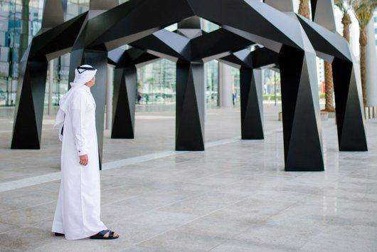

Festivals · Arts
Rubaiya Qatar 2026 (Contemporary Arts Quadrennial)
- Dates
- –
- Venue
- ALRIWAQ Arts + Architecture (principal venue) and other sites across Qatar
- Location
- Doha, Qatar
- Format
- In-person
- Category
- Arts
- Industry
- Art
- Organiser
- Qatar Museums
- Official website
- https://qm.org.qa/en/about-us/about-rubaiya-qatar/rubaiya-qatar-2026-the-inaugural-edition/
About
Inaugural edition: 120+ artists from 45+ countries; headline exhibition Unruly Waters. Multi-venue. Qatar dates are local (Arabia Standard Time, UTC+3).
Topics: contemporary art, public art, performance.
No organiser attendance figure found on official pages (23 Nov 2026). Ranked by an estimated size tier 'large' (our judgement from format and scale, not an official number).
Sources
- Official — https://qm.org.qa/en/about-us/about-rubaiya-qatar/rubaiya-qatar-2026-the-inaugural-edition/
- State-news-agency — https://qna.org.qa/en/news/news-details?date=22%2F11%2F2026&id=qm-launches-inaugural-edition-of-rubaiya-qatar-featuring-120-artists-from-45-countries
- Official-tourism-calendar — https://visitqatar.com/intl-en/events-calendar